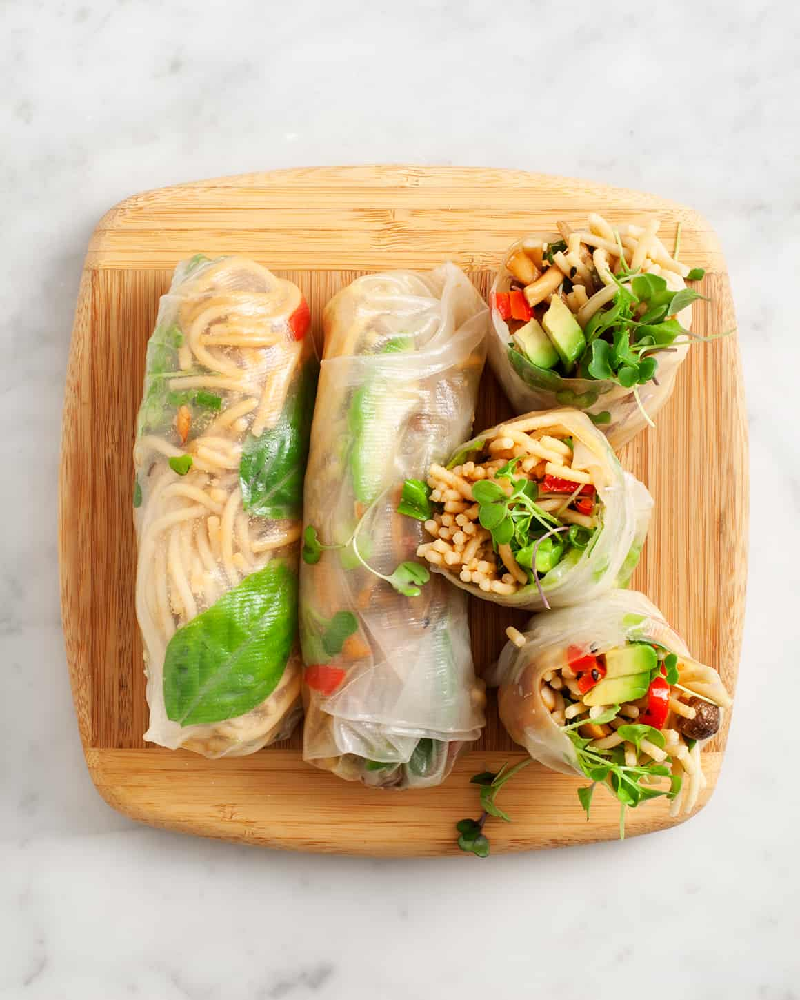

Description
Spring rolls are a delightful and refreshing Vietnamese dish that showcases the vibrant flavors of fresh ingredients wrapped in delicate rice paper. These light and healthy rolls are filled with a harmonious combination of crisp vegetables, such as carrots, cucumber, and lettuce, along with fragrant herbs like mint, cilantro, and Thai basil. Optional additions include tender shrimp or grilled meat, rice vermicelli noodles, and crunchy bean sprouts. The filling is carefully wrapped in translucent rice paper, creating a beautiful cylindrical shape. Spring rolls are not complete without a tantalizing dipping sauce, such as hoisin sauce or peanut sauce, adding a burst of savory or nutty flavors to each bite. These versatile rolls can be enjoyed as an appetizer, a refreshing snack, or as part of a wholesome meal. Perfect for warm weather or any time you crave a light and satisfying treat, Vietnamese spring rolls are a delicious way to experience the vibrant flavors of Southeast Asia.
Ingredients
- Rice paper wrappers
- Shrimp or grilled meat (such as chicken or pork)
- Rice vermicelli noodles
- Fresh herbs (such as mint, cilantro, and Thai basil)
- Lettuce or cabbage
- Bean sprouts
- Carrots
- Cucumber
- Spring onions
- Roasted peanuts
- Dipping sauce (such as hoisin sauce or peanut sauce)
Recipe
- Cook the shrimp or grill the desired meat. Let them cool and slice them into thin strips.
- Prepare the rice vermicelli noodles according to the package instructions. Drain and rinse them with cold water.
- Julienne the carrots and cucumber into thin matchstick-like pieces.
- Prepare the fresh herbs by washing and gently removing the leaves from the stems.
- Fill a large bowl with warm water. Dip one rice paper wrapper into the water for a few seconds until it becomes soft and pliable.
- Place the softened rice paper wrapper on a clean, flat surface. On the bottom third of the wrapper, add a small handful of rice vermicelli noodles.
- Add a few slices of shrimp or grilled meat on top of the noodles.
- Add a few leaves of fresh herbs, lettuce or cabbage, bean sprouts, julienned carrots and cucumber, and some spring onions.
- Sprinkle some roasted peanuts over the filling.
- Roll the rice paper wrapper tightly, folding the sides inward, to form a neat cylinder shape.
- Repeat the process with the remaining ingredients to make more spring rolls.
- Serve the fresh Vietnamese spring rolls with your preferred dipping sauce.
Return to top
Return to main page